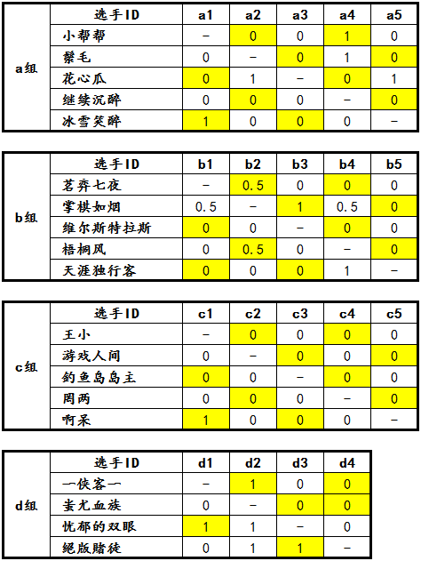

“西北狼”杯第一届博弈规则论坛战截至发稿时已经进行了5天。昨日深夜，一直沉寂的游戏人间选手突然显露身影，正式开始了他的四盘对局，为c组循环赛带来了一颗重磅炸弹。同时，这也标志着参赛的19名选手全面登上比赛的舞台，精彩纷呈，一触即发！
从整体情况来说，大多数对局都比较激烈，但也不乏开局速胜速败的情况出现。到目前为止，根据已经宣布比赛结果的对局，仍然未能有任何一名选手确定从预赛中脱颖而出晋级决赛。从现在来看，先手后手胜率比较均匀，执白方取胜盘数则较多一些。我们传统的“三三”、“四四”、“长连”禁手体系是在RIF规则的百年发展历程中逐渐积淀而成的，它与博弈规则的契合度是否良好？或者反过来说，我们如何构造博弈开局局面才能使双方形状优劣差恰好被禁手体系平衡掉？与其说这是规则本身向我们提出的疑问，更不如说这是两套规则体系共同向棋手提出的挑战！到目前为止，开局策略基本呈现多元化的趋势，也有不少选手和观众对该规则提出了各种各样的看法。
a组：形势比较混乱，a3 花心瓜占据了一定优势。
b组：b2 掌棋如烟距离出线仅有1胜之遥。b5 天涯独行客还需努力。
c组：到目前为止仅有一场对局结束，随着c2 游戏人间杀入重围，一切都扑朔迷离。
d组：形势最为清晰的一组，6场比赛已经结束了5场，蚩尤血族三战尽墨，最后一场为d1 一侠客一对战d4 ^版徒，只要^版徒不输，^版徒和d3 忧郁的双眼即可确定出线，万一^版徒输掉对局，则四人形成2-2-2-0循环套，需要裁判长组织加赛。
分组对阵积分表根据裁判员的判罚，在每天上午更新。论坛战战报每隔5天发布一次。比赛奖励将按照实际情况随时发放，请各位选手注意查收。
［ 小丸.net 于 2013-7-15 9:18:52 时奖励此帖[金币加 100 威望加1］